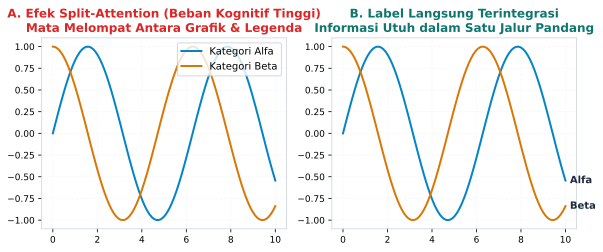

5 Mengapa Kertas Membekukan Nalar?
“Ketika seluruh daya memori kerja seorang siswa terkuras habis hanya untuk melakukan operasi hitung aritmetika manual di atas lembar kertas buram, tidak ada lagi ruang kognitif yang tersisa di otaknya untuk merenungkan makna dari angka yang ia hasilkan.”
5.1 Tragedi Kertas Buram di Ruang Kelas
Pemandangan ini barangkali merupakan salah satu kenangan paling membekas bagi siapa pun yang pernah duduk di bangku sekolah: deretan meja kayu yang dipenuhi lembaran kertas buram, suara gesekan pensil yang beradu cepat dengan waktu, dan desah napas lelah puluhan siswa yang sedang berjibaku menghitung tabel distribusi frekuensi.
Di papan tulis hitam, guru baru saja menuliskan data mentah berisi empat puluh nilai ulangan harian. Tugas siswa tampak sederhana namun melelahkan: membuat tabel frekuensi bergolong, menghitung titik tengah kelas (\(m_i\)), menghitung perkalian frekuensi dengan titik tengah, menghitung simpangan setiap data terhadap nilai rata-rata sementara, menguadratkan selisih tersebut, lalu menjumlahkannya hingga ke baris paling bawah untuk mencari nilai ragam (variance) dan simpangan baku (\(\sigma\)):
\[\sigma = \sqrt{\frac{\sum_{i=1}^{k} f_i (m_i - \bar{x})^2}{\sum_{i=1}^{k} f_i}}\]
Selama empat puluh lima menit berikutnya, keheningan yang mencekam menyelimuti ruangan. Seluruh perhatian siswa terpusat pada operasi teknis tingkat rendah: apakah perkalian tujuh dikali delapan belas koma lima sudah tepat? Di mana letak tanda koma desimal pada baris ketiga? Ketika ada satu angka saja yang keliru dijumlahkan pada kolom kedua, seluruh perhitungan di bawahnya runtuh seketika laksana tumpukan kartu, memaksa siswa menghapus seluruh kertas buramnya dan memulai kembali dari awal.
Ketika bel tanda istirahat akhirnya berbunyi nyaring, para siswa mengumpulkan lembar jawaban mereka dengan jari-jari tangan yang pegal dan pikiran yang letih lunglai. Namun, jika pada detik itu kita menghampiri salah satu siswa berprestasi yang berhasil menyelesaikan seluruh perhitungan dengan benar, lalu bertanya: “Apa yang sesungguhnya ditunjukkan oleh angka simpangan baku sebesar empat koma dua ini terhadap keadilan distribusi nilai di kelasmu? Apakah nilai ini mencerminkan kesenjangan yang lebar atau pemerataan kemampuan?”, siswa tersebut kemungkinan besar akan menatap kita dengan pandangan hampa.
Ia tahu cara menghitungnya, tetapi ia tidak tahu apa maknanya.
Tragedi pedagogis ini telah berlangsung selama beberapa generasi dalam sistem pendidikan kita. Kertas statis dan latihan hitung manual berulang-ulang yang dirancang tanpa representasi visual atau konteks dapat membuat sebagian konsep lebih sulit dihubungkan dengan intuisi. Matematika dan statistika yang sejatinya merupakan bahasa untuk memahami pola alam semesta telah direduksi menjadi sekadar olahraga jari dan ketangkasan klerikal yang membosankan.
Mengapa kertas buram dan metode kalkulasi manual begitu efektif dalam mematikan intuisi berpikir? Untuk menjawab pertanyaan mendasar ini, kita harus menyelami mekanisme biologis otak manusia melalui kacamata Teori Beban Kognitif (Cognitive Load Theory).
5.2 Anatomi Memori Kerja dan Teori Beban Kognitif
Pada akhir dekade 1980-an, seorang psikolog pendidikan terkemuka asal Australia, John Sweller, mempublikasikan sebuah kerangka teori revolusioner yang mengubah cara pandang dunia terhadap proses belajar manusia (Sweller 1988). Teori tersebut berakar pada pemahaman mengenai arsitektur kognitif manusia, khususnya keterbatasan memori kerja (working memory).
Otak manusia memiliki dua jenis sistem memori utama yang bekerja saling melengkapi: 1. Memori Jangka Panjang (Long-Term Memory): Gudang penyimpanan raksasa berkapasitas nyaris tanpa batas yang menyimpan seluruh skema pengetahuan, pengalaman hidup, dan keterampilan kita secara permanen. 2. Memori Kerja (Working Memory): Meja kerja sadar tempat otak kita memproses informasi baru yang masuk secara aktif saat ini.
Berbeda dengan memori jangka panjang yang sangat luas, memori kerja manusia memiliki kapasitas yang sangat sempit dan rentan mengalami kelebihan beban (cognitive overload). Pada tahun 1956, psikolog George A. Miller mempublikasikan makalah klasiknya mengenai “angka ajaib tujuh plus minus dua” (\(7 \pm 2\)) sebagai batas kapasitas pemrosesan informasi manusia, namun angka itu bukan hukum universal yang berlaku untuk semua jenis materi. Penelitian neurosains kognitif kontemporer oleh Nelson Cowan merevisi angka tersebut menjadi lebih ketat: ketika manusia berhadapan dengan informasi baru yang belum terbiasa, memori kerja kita sesungguhnya hanya mampu menampung sekitar empat bongkahan informasi (four chunks of information) dalam satu waktu, dan itu pun pada kondisi eksperimental tertentu.
Jika informasi baru yang masuk melampaui batas empat bongkahan ini, memori kerja akan mengalami kegagalan proses yang dramatis. Dalam ilmu komputer, fenomena ini mirip dengan thrashing, di mana memori sistem habis terkuras hanya untuk memindahkan data keluar-masuk ruang simpan sementara tanpa pernah sempat mengeksekusi program utama. Pada otak siswa, thrashing kognitif membuat konsentrasi buyar, memicu kepanikan mental, dan menyebabkan informasi yang baru saja dipelajari menguap tanpa sempat tersimpan ke dalam memori jangka panjang.
Berdasarkan keterbatasan arsitektur ini, Sweller membagi beban kerja kognitif yang dialami seseorang saat belajar ke dalam tiga kategori utama:
5.2.1 Beban Kognitif Intrinsik (Intrinsic Cognitive Load)
Beban intrinsik adalah tingkat kesulitan inheren yang melekat pada materi pelajaran itu sendiri. Memahami konsep simpangan baku secara alami memang lebih rumit dibandingkan memahami konsep penjumlahan bilangan bulat, karena simpangan baku melibatkan banyak elemen yang saling berinteraksi secara simultan (titik tengah, rata-rata, selisih kuadrat, dan pembagian akar). Beban intrinsik tidak dapat dihilangkan begitu saja tanpa menyederhanakan konsep intinya.
5.2.2 Beban Kognitif Ekstrinsik (Extraneous Cognitive Load)
Beban ekstrinsik adalah beban mental yang sia-sia, tidak produktif, dan menguras energi otak akibat cara penyajian materi yang buruk, desain media yang membingungkan, atau aktivitas belajar yang tidak relevan dengan tujuan pemahaman. Menghabiskan waktu setengah jam untuk menghitung perkalian desimal bersusun panjang di atas kertas buram adalah contoh sempurna dari beban kognitif ekstrinsik murni. Aktivitas tersebut memeras memori kerja siswa, namun sama sekali tidak memberikan sumbangan apa pun terhadap pemahaman konsep variabilitas data.
5.2.3 Beban Kognitif Erat (Germane Cognitive Load)
Beban erat adalah usaha mental yang produktif dan bermanfaat, yaitu energi otak yang dialokasikan khusus untuk mengintegrasikan informasi baru dengan skema pengetahuan lama yang ada di memori jangka panjang. Ketika seorang siswa merenungkan mengapa pencilan ekstrem mempengaruhi rata-rata tetapi tidak mempengaruhi median, siswa tersebut sedang mengerahkan beban kognitif erat untuk membangun intuisi konseptual yang mendalam. Dalam rumusan mutakhir teori ini, beban erat tidak dipandang sebagai ember ketiga yang berdiri sendiri, melainkan sebagai sumber daya memori kerja yang diarahkan untuk menangani kompleksitas bawaan materi (Sweller et al. 2019).
Dalam pembelajaran yang ideal, guru dan perancang kurikulum bertugas meminimalkan beban ekstrinsik serendah mungkin, mengelola beban intrinsik secara bertahap, sehingga sebagian besar kapasitas memori kerja siswa dapat dialokasikan sepenuhnya untuk beban kognitif erat.
Sayangnya, dalam pembelajaran statistika tradisional berbasis kertas yang minim representasi visual, yang terjadi justru sebaliknya: beban ekstrinsik menyita porsi besar kapasitas memori kerja yang sempit itu. Otak mereka terlalu lelah untuk berpikir kritis karena tenaganya telah habis diperas oleh kalkulasi manual.
5.3 Efek Pemisahan Perhatian (Split-Attention Effect)
Salah satu sumber utama beban kognitif ekstrinsik yang paling merusak pada media cetak konvensional adalah efek pemisahan perhatian (split-attention effect). Efek ini terjadi ketika dua atau lebih sumber informasi yang saling melengkapi disajikan secara terpisah dalam ruang fisik atau rentang waktu, memaksa pembaca untuk terus-menerus membagi pandangan dan mengintegrasikannya secara mental di dalam otak.
Bayangkan tata letak umum pada buku teks matematika sekolah menengah: di sisi kiri halaman terdapat sebuah grafik garis yang rumit, di pojok kanan bawah terdapat kotak legenda terpisah yang menjelaskan arti warna-warna garis, dan di halaman sebaliknya terdapat teks penjelasan panjang yang merujuk pada titik-titik tertentu di grafik tersebut.

Perhatikan perbandingan visual pada Figure 5.1. Pada Panel A, pembaca mengalami efek pemisahan perhatian yang melelahkan: 1. Mata membaca kurva biru pada grafik. 2. Pandangan melompat ke kotak legenda di sudut untuk mencari arti garis biru tersebut (Kategori Alfa). 3. Memori kerja harus menyimpan label Alfa seraya pandangan mata melompat kembali ke grafik untuk melihat bentuk lekukannya. 4. Pandangan melompat lagi ke legenda untuk memeriksa garis merah (Kategori Beta), lalu kembali lagi ke grafik.
Proses bolak-balik visual (visual search) dan pencocokan mental ini menghabiskan kuota memori kerja yang sangat berharga. Sebelum pembaca sempat menganalisis tren data dan menarik wawasan bermakna, otak mereka sudah kelelahan hanya untuk mencocokkan kode warna dengan namanya.
Bandingkan dengan Panel B, di mana label teks ditempatkan langsung di ujung masing-masing garis data (direct labeling). Informasi nama dan bentuk kurva tersaji secara terintegrasi dalam satu sapuan pandang. Beban kognitif ekstrinsik seketika lenyap, memungkinkan memori kerja pembaca fokus seratus persen pada interpretasi hubungan antarvariabel.
Media kertas secara fisik memiliki keterbatasan statis yang memperparah efek pemisahan perhatian ini. Di atas kertas, grafik tidak dapat bergerak, skala tidak dapat diubah secara langsung, dan hubungan dinamis antarparameter matematika terperangkap dalam simbol-simbol aljabar yang kaku.
5.4 Teori Representasi Jamak dan Kebutuhan Transisi Digital
Mengapa transisi dari simbol aljabar statis menuju representasi visual dinamis begitu penting bagi perkembangan kecerdasan manusia? Filsuf dan psikolog pendidikan asal Prancis, Raymond Duval, merumuskan Teori Representasi Jamak (Multiple Semiotic Representations) (Duval 2006). Duval menegaskan bahwa pemahaman matematika yang sejati hanya dapat tercapai jika seorang pembelajar mampu melakukan koordinasi dan transformasi bolak-balik di antara setidaknya dua sistem representasi yang berbeda: sistem register simbolik aljabar dan sistem register visual geometris.
Ketika siswa hanya berkutat dengan formula aljabar di atas kertas, mereka hanya mengoperasikan satu register kognitif yang sangat abstrak. Mereka melihat huruf-huruf simbol seperti \(\mu\), \(\sigma\), dan \(\sum\) tanpa pernah memiliki jangkar visual (visual anchor) di benak mereka tentang wujud fisik dari konsep tersebut.
Sebagai contoh nyata, mari kita bedah konsep ragam (variance) dan simpangan baku (standard deviation). Mengapa kita harus menguadratkan selisih data dari nilai rata-rata, lalu pada akhirnya menarik akar kuadratnya kembali?
Bagi siswa yang belajar di atas kertas, operasi penguadratan dan penarikan akar hanyalah dua langkah mekanis acak dalam rumus. Mereka tidak menyadari bahwa operasi penguadratan \((x_i - \bar{x})^2\) sejatinya adalah transformasi geometris: kita sedang mengubah jarak linear satu dimensi menjadi bidang luas persegi dua dimensi untuk memastikan bahwa deviasi negatif tidak saling meniadakan dengan deviasi positif.
Dan mengapa kita harus menarik akar kuadrat pada tahap akhir? Karena satuan ragam berada dalam wujud kuadrat (misalnya rupiah kuadrat atau sentimeter kuadrat), sebuah satuan yang tidak masuk akal dalam dunia nyata! Penarikan akar kuadrat mengembalikan satuan ukuran tersebut ke dimensi linear aslinya (rupiah atau sentimeter), sehingga kita dapat mengukurnya secara wajar berdampingan dengan nilai rata-rata.
Transformasi semiotik yang sangat indah ini nyaris mustahil ditangkap jika siswa hanya disuruh menghafal rumus di atas kertas buram. Namun, ketika konsep ini ditampilkan di layar komputer atau tablet di mana siswa dapat melihat sebuah persegi geometris membesar dan mengecil secara dinamis seiring pergeseran titik data, pemahaman konseptual itu seketika menyala terang di benak mereka.
Konsep lain yang kerap menjadi korban dari pasung kertas adalah kemencengan distribusi (skewness). Di buku teks aljabar, kemencengan diajarkan melalui rumus momen ketiga yang dingin dan mengintimidasi. Namun, ketika siswa melihat kurva distribusi yang menjulur panjang ke kanan laksana ekor layang-layang, mereka seketika memahami esensinya: ekor panjang itu adalah jejak dari segelintir data bernilai sangat tinggi yang sedang menarik nilai rata-rata menjauh dari nilai median.
Satu detik pandangan pada kurva visual dinamis mampu menyampaikan intuisi mendalam yang gagal dibangun oleh tiga puluh menit ceramah formula di papan tulis. Inilah yang dirumuskan oleh Allan Paivio dalam Teori Pengkodean Ganda (Dual Coding Theory) (Paivio 1986): memori manusia bekerja paling tangguh ketika informasi linguistik verbal dipasangkan secara simultan dengan representasi visual non-verbal. Kertas statis memisahkan kedua jalur ini, sementara teknologi layar interaktif menyatukannya menjadi satu jembatan intuisi yang hidup.
5.5 Desakan Pergeseran Kurikulum Pendidikan Dini
Fakta-fakta psikologi kognitif di atas membawa kita pada sebuah kesimpulan yang tidak dapat ditawar lagi: sistem kurikulum pendidikan kita harus melakukan pergeseran haluan secara mendasar. Keterampilan berpikir komputasional (computational thinking) dan eksplorasi data interaktif tidak boleh lagi dianggap sebagai materi pelengkap yang baru diperkenalkan saat mahasiswa mengambil mata kuliah statistika tingkat lanjut di perguruan tinggi.
Fondasi nalar data harus ditanamkan sejak jenjang pendidikan dasar (SD) dan sekolah menengah pertama (SMP). Mengapa demikian? Karena di era kecerdasan buatan saat ini, keterampilan berhitung manual telah kehilangan nilai ekonomis dan fungsionalnya di dunia nyata.
Tidak ada satu pun kantor perusahaan, lembaga riset sains, rumah sakit, yayasan filantropi, maupun instansi pemerintahan di dunia modern yang menugaskan karyawannya untuk menghitung simpangan baku atau korelasi data penjualan menggunakan kertas buram dan pensil. Pekerjaan kalkulasi aritmetika semacam itu kini diselesaikan oleh komputer dan model bahasa besar dalam waktu kurang dari satu per seribu detik.
Jika sekolah kita terus-menerus membuang ratusan jam pelajaran hanya untuk melatih anak-anak kita menjadi mesin kalkulator biologis yang lambat dan rentan salah hitung, kita sesungguhnya sedang mempersiapkan generasi muda untuk masa lalu yang telah punah.
Di lingkungan keluarga di rumah, para orang tua juga dapat mulai mengubah cara mendampingi anak belajar. Ketika anak membawa pulang tugas data, jangan tanyakan: “Berapa jawaban hitungannya?”. Alih-alih demikian, bukalah lembar kerja sederhana di komputer keluarga, masukkan angka-angkanya, buat grafik batangnya, lalu tanyakan: “Mengapa angka di bulan Juni melonjak tinggi? Menurutmu apa yang terjadi pada bulan itu?”. Ajak anak berdialog, mengamati pola, dan mengutarakan hipotesis.
Kurikulum pendidikan modern harus berani memindahkan beban kerja kognitif mekanis kepada mesin komputasi, dan mengarahkan energi mental siswa untuk menguasai kompetensi tingkat tinggi: - Eksplorasi Parameter: Menggeser tuas variabel untuk melihat bagaimana perubahan satu angka mengubah keseluruhan pola kurva. - Deteksi Anomali: Mengidentifikasi data pencilan dan menanyakan apa cerita manusiawi di balik ketidakwajaran angka tersebut. - Evaluasi Model: Menilai apakah grafik yang dihasilkan oleh kecerdasan buatan masuk akal, adil, dan bebas dari distorsi visual. - Komunikasi Wawasan: Menyusun narasi berbasis data (data storytelling) yang mampu menggerakkan hati dan pikiran para pengambil keputusan.
Kertas tidak perlu dibuang sepenuhnya dari peradaban sekolah. Kertas tetap memiliki fungsi luhur sebagai media sketsa bebas, sarana mencatat perenungan nurani, dan kanvas dialog santai. Namun, kertas harus dibebaskan dari fungsinya sebagai alat pasung nalar. Komputasi dan visualisasi layar harus mengambil alih beban kalkulasi, sehingga akal budi manusia dapat terbang bebas menjelajahi keindahan makna di balik angka.